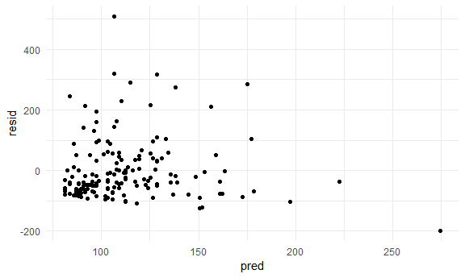
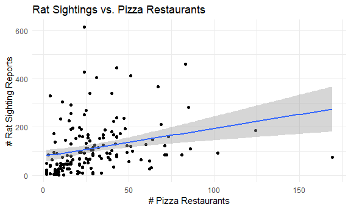

2025-11-21
Please note for all those who use this… run once.
rat_df =
read_csv("data_not_for_github/NYC_rats.csv") |>
janitor::clean_names() |>
mutate(created_date = ymd_hms(created_date)) |>
filter(year(created_date) == 2025) |>
rename(zipcode = incident_zip) |>
select(created_date, zipcode, borough, latitude, longitude, location_type)
restaurant_df =
read_csv("data_not_for_github/NYC_restaurant.csv") |>
janitor::clean_names() |>
mutate(inspection_date = mdy(inspection_date)) |>
filter(year(inspection_date) == 2025) |>
select(dba, boro, zipcode, inspection_date, violation_description, grade, latitude, longitude)
dir.create("data_small", showWarnings = FALSE)
write_csv(rat_df, "data_small/rat_df_2025_small.csv")
write_csv(restaurant_df, "data_small/restaurant_df_2025_small.csv")rat_df <- read_csv("data_small/rat_df_2025_small.csv")## Rows: 18978 Columns: 6
## ── Column specification ───────
## Delimiter: ","
## chr (2): borough, location_type
## dbl (3): zipcode, latitude, longitude
## dttm (1): created_date
##
## ℹ Use `spec()` to retrieve the full column specification for this data.
## ℹ Specify the column types or set `show_col_types = FALSE` to quiet this message.restaurant_df <- read_csv("data_small/restaurant_df_2025_small.csv")## Rows: 84603 Columns: 8
## ── Column specification ───────
## Delimiter: ","
## chr (4): dba, boro, violation_description, grade
## dbl (3): zipcode, latitude, longitude
## date (1): inspection_date
##
## ℹ Use `spec()` to retrieve the full column specification for this data.
## ℹ Specify the column types or set `show_col_types = FALSE` to quiet this message.# Limit to only pizza joints
pizza_df =
restaurant_df |>
filter((str_detect(str_to_lower(dba),
"pizza|pizzeria|slice")))Our decision to use only 2025 data provides a current snapshot of rat sightings and pizza restaurant inspections in NYC. This ensures relevance but means we cannot analyze longitudinal trends in rat populations, and some restaurants may be absent from our dataset if they weren’t inspected during this specific time period. Our search terms for pizza restuarants include “pizza”, “pizzeria”, and “slice”. Ideally this would cover all pizza joints but we recognize that some may fall under various other names!
Note that we can run our analyses without doing this, but this simplifies our data down to just counts by zipcode.THIS DOES NOT INCLUDE LAT AND LONG….for mapping purposes may need to use individual datasets above!
# Count rats per zipcode
rat_summary <- rat_df |>
group_by(zipcode) |>
summarise(ratreport_count = n(), .groups = "drop")
# Count restaurants per zipcode by grade
pizza_summary <- pizza_df |>
group_by(zipcode) |>
summarise(
pizzarestaurant_count = n(),
pizza_A = sum(grade == "A", na.rm = TRUE),
pizza_B = sum(grade == "B", na.rm = TRUE),
pizza_C = sum(grade == "C", na.rm = TRUE)
, .groups = "drop")
# Join
zipcode_summary <- rat_summary |>
left_join(pizza_summary, by = "zipcode")
# Saving zipcode_summary to directory
write_csv(zipcode_summary, "data_small/zipcode_summary.csv")# Fitting a linear regression
fit = lm(ratreport_count ~ pizzarestaurant_count, data = zipcode_summary)
# Examining the regression output
fit |>
broom::tidy() |>
select(term, estimate, p.value) |>
knitr::kable(digits = 3)| term | estimate | p.value |
|---|---|---|
| (Intercept) | 78.925 | 0.000 |
| pizzarestaurant_count | 1.158 | 0.001 |
# Obtaining r-squared, p-value
fit |>
broom::glance() |>
select(r.squared, p.value) |>
knitr::kable(digits = 3)| r.squared | p.value |
|---|---|
| 0.07 | 0.001 |
# Looking at the residuals vs. fitted values
zipcode_summary |>
modelr::add_residuals(fit) |>
modelr::add_predictions(fit) |>
ggplot(aes(x = pred, y = resid)) +
geom_point() ## Warning: Removed 24 rows containing
## missing values or values
## outside the scale range
## (`geom_point()`).
# Plotting rat sightings count vs. restaurant count
zipcode_summary |>
ggplot(aes(x = pizzarestaurant_count, y = ratreport_count)) +
geom_point() +
geom_smooth(method = "lm", se = TRUE) +
labs(
x = "# Pizza Restaurants",
y = "# Rat Sighting Reports",
title = "Rat Sightings vs. Pizza Restaurants"
)## `geom_smooth()` using formula
## = 'y ~ x'
## Warning: Removed 24 rows containing
## non-finite outside the scale
## range (`stat_smooth()`).
## Removed 24 rows containing
## missing values or values
## outside the scale range
## (`geom_point()`).